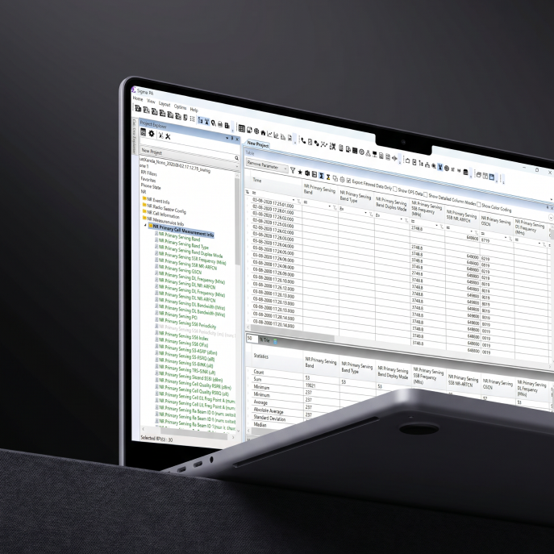

Sigma-PA
Replay and analyse supported measurement logs
Sigma-PA processes and analyses log data from Sigma-LA, Sigma-ML, QXDM and other drive test and logging tools. Automatic analysis, synchronised replay and Excel-based report templates help engineers move from raw logs to a report they can explain.
Overview

Investigate events, measurements and KPIs
Sigma-PA is a Windows application for replaying and analysing supported measurement logs. Correlate radio and protocol information, inspect events and KPIs, analyse supported packet data, and prepare reports using Excel export and configured templates.
Highlights
Analysis and reporting highlights
Analyse supported Sigma-LA and Sigma-ML logs, QXDM and other supported measurement formats. Compatibility is confirmed by exact file type and version.
Drag and drop parameters onto bar, pie, PDF, CDF and distribution charts, then send them to MS Excel with the raw data as editable charts.
Detects handovers, re-connections and dropped calls, and extracts processing times and success or failure judgments.
Used for drive test, walk test, single site verification and benchmarking analysis. Runs on Windows; confirm the supported release with Meritech.
Replay, investigate and report
The tabs below show what Sigma-PA imports and replays, what it analyses and exports, and how it streamlines routine reporting.
- Import and replay supported Sigma and third-party measurement logs
- Replays sessions at configurable speed with multi-graph views
- Reads synchronised protocol, app, call, and graph views simultaneously
- Filters call timelines, timestamps, and applies specific search string lookups
- Compare compatible measurements using aligned KPI definitions and campaign methods
- Build and save custom report templates for repeat campaigns
- Layer 3 protocol decoding for RRC, NAS and SIB messages; PCAP analysis
- Analyse supported cellular technologies according to the input log and available decoder
- Export of graphs to MS Excel as editable data for easy reuse
- Calculation and aggregation of KPIs; automatic handover and dropped-call detection
- Automatic report generation from Excel-based templates
- Customisable KPI templates, thresholds, and report layouts
- Native Sigma-LA and Sigma-ML log support, with supported QXDM and other compatible formats
- Auto-report generation helps prepare routine reports
- Throughput analysis by integrating PCAP data
- Same tool for detailed investigations and reusable reports
- Synchronised views and replay make analysis easier
- Display available cell and network information from supported input data
Analysis workflows
Investigate compatible logs and prepare reports using the agreed KPI methods.

Investigate recorded performance issues. Use KPIs and protocol evidence to support cause analysis and recommendations.
Prepare reports against agreed acceptance rules using compatible measurements, defined KPIs and configured templates.
Analyse compatible campaign logs using consistent KPI definitions and measurement methods.